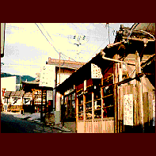

石切神社/大阪府東大阪市
近鉄奈良線の石切駅の改札を抜けた瞬間からそれはすでに始まっていた。
いきなりデカい鳥居が目の前に建っており､通勤客であろうと観光客であろうとこの地に足を踏み入れた者はすべてこの洗礼を受けなければならない。
そう､ここは大阪の下品な民間信仰の牙城､石切神社なのだ。
ガイドには駅より徒歩15分と書いてあるが､はたして何人がこの時間内に神社まで到達できるだろうか。
ちなみに私は2時間かかりました。それほどまでにここの参道は濃い。神社までの長い長い下り坂､その両側には我々のお脳をとろけさせてくれる様々な店が並んでいる。
主に漢方薬屋と占屋なのだが､それらがハンパじゃない。
「ひふかゆいひとご相談下さい」「あらゆる黒焼きを取り揃えております」「最新式コンピューターであなたの御先祖の肖像画描きます」「かべつちたべる子､あほう/薬あります」等々の貼紙。
すごい。すごすぎる。誇大広告でなくホンマに
こんな商売をしているのだ。
この神社､オデキをはじめ様々な病に御利益があるらしく､各地から病に悩む人達が来るのだが､はたしてその中にあほうにつける薬を買っていく人がいるのかどうか､大いに疑問である。
特に石切内でチェーン化している豊八という占処はヤバイ。占い＆カラオケの店までやっている始末。
そして最近のニュースポットとして熱い注目を浴びているのが（俺だけか）「石切夢観音」だ。石切神社の上社が駅の逆側にあるのだがその近くにこの得体の知れない宗教施設はある。石切神社と関係あるのかどうかは知らないけれど、この地のバッドオーラに引かれてつくったことには変わりないだろう。本尊様の夢観音はどうみても出来損ないのスヌーピーちゃん。千手観音をイメージしたらしく手は10本。個人的にはJUJU観音と呼んでいる。へんな場所だ。要チェック。
いずれにしてもこのエリア全域が20世紀末の日本とは思えない雰囲気を漂わせているスポットだ。行くべし。
珍寺大道場 HOME